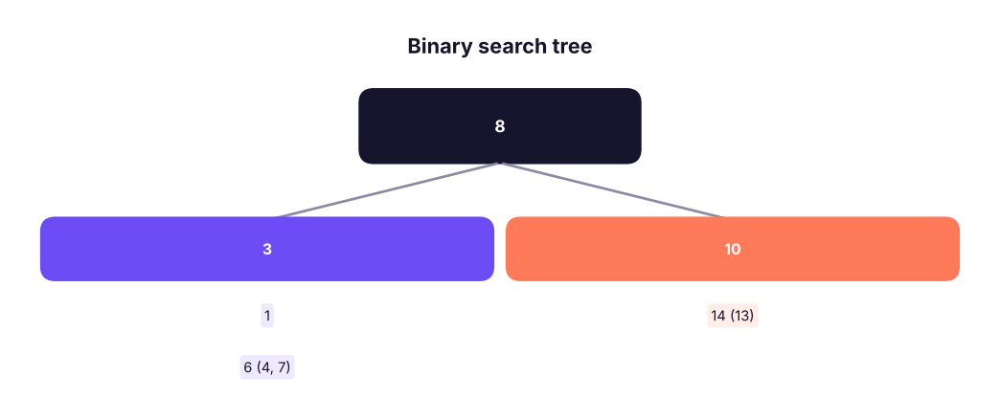
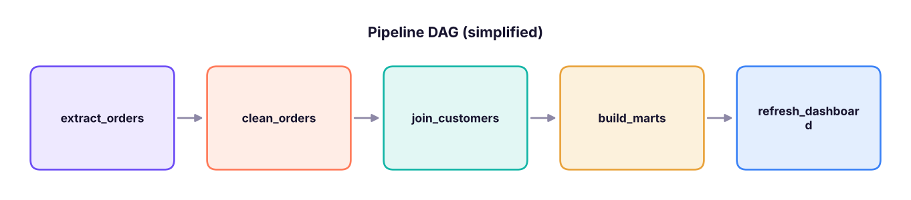
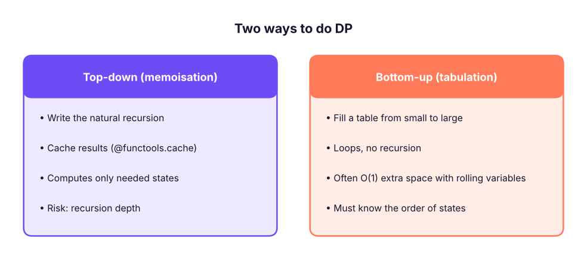

DSA III: Trees, Heaps, Graphs (BFS/DFS) and Dynamic Programming
Finish the DSA toolkit. Binary trees and binary search trees with traversals, heaps and priority queues with heapq (top-k, merge k lists, running median), graphs with adjacency lists, BFS and DFS, shortest paths and topological sort (as used in data pipelines), and dynamic programming from memoisation to tables.
- Traverse binary trees (pre-, in-, post- and level-order) and use a binary search tree
- Use heapq for top-k, k-way merge, scheduling and running medians
- Represent graphs and apply BFS, DFS, Dijkstra and topological sort
- Recognise dynamic-programming problems and solve them with memoisation and tabulation
- Connect these structures to data tools (B-tree indexes, DAG schedulers, recommendation graphs)
Trees
A tree is a hierarchy of nodes: one root, each node with children, no cycles. Examples: folders, org charts, JSON documents, decision trees in ML, and B-tree indexes in databases.

class TreeNode:
def __init__(self, val, left=None, right=None): self.val, self.left, self.right = val, left, right
def insert(root, val): # BST insert, O(height)
if not root: return TreeNode(val)
if val < root.val: root.left = insert(root.left, val)
else: root.right = insert(root.right, val)
return root
root = None
for v in [8, 3, 10, 1, 6, 14, 4, 7, 13]: root = insert(root, v)
def inorder(n): return inorder(n.left) + [n.val] + inorder(n.right) if n else []
def preorder(n): return [n.val] + preorder(n.left) + preorder(n.right) if n else []
def postorder(n): return postorder(n.left) + postorder(n.right) + [n.val] if n else []
from collections import deque
def level_order(n):
out, q = [], deque([n])
while q:
level = []
for _ in range(len(q)):
node = q.popleft(); level.append(node.val)
q.extend(c for c in (node.left, node.right) if c)
out.append(level)
return out
def height(n): return 1 + max(height(n.left), height(n.right)) if n else 0
def contains(n, x):
while n:
if x == n.val: return True
n = n.left if x < n.val else n.right
return False
print("in-order :", inorder(root), "(sorted!)")
print("pre-order :", preorder(root)); print("post-order:", postorder(root)); print("levels :", level_order(root))
print("height", height(root), "| contains 7?", contains(root, 7), "| contains 5?", contains(root, 5))in-order : [1, 3, 4, 6, 7, 8, 10, 13, 14] (sorted!) pre-order : [8, 3, 1, 6, 4, 7, 10, 14, 13] post-order: [1, 4, 7, 6, 3, 13, 14, 10, 8] levels : [[8], [3, 10], [1, 6, 14], [4, 7, 13]] height 4 | contains 7? True | contains 5? False
| Traversal | Order | Use |
|---|---|---|
| In-order | left, node, right | BST → sorted output |
| Pre-order | node, left, right | Copy/serialise a tree |
| Post-order | left, right, node | Delete, compute sizes bottom-up |
| Level-order (BFS) | level by level | Shortest path in unweighted trees, org levels |
def is_valid_bst(n, lo=float("-inf"), hi=float("inf")):
return not n or (lo < n.val < hi and is_valid_bst(n.left, lo, n.val) and is_valid_bst(n.right, n.val, hi))
def lowest_common_ancestor(n, a, b): # in a BST
while n:
if a < n.val and b < n.val: n = n.left
elif a > n.val and b > n.val: n = n.right
else: return n.val
def max_path_sum_root_to_leaf(n):
if not n: return float("-inf")
if not n.left and not n.right: return n.val
return n.val + max(max_path_sum_root_to_leaf(n.left), max_path_sum_root_to_leaf(n.right))
print(is_valid_bst(root), lowest_common_ancestor(root, 4, 7), lowest_common_ancestor(root, 1, 14), max_path_sum_root_to_leaf(root))True 6 8 45
A BST is O(log n) only when balanced; inserting sorted data creates a "linked list" with O(n) lookups. Databases use balanced B-trees, which is why an index makes WHERE id = 42 fast.
Heaps and priority queues
A heap always gives the smallest item in O(1) and inserts/removes in O(log n). Python's heapq is a min-heap on a list.
import heapq
h = []
for x in [5, 1, 8, 3, 9, 2]: heapq.heappush(h, x)
print(h[0], [heapq.heappop(h) for _ in range(3)])
sales = {"Pune": 120, "Delhi": 340, "Kochi": 90, "Goa": 210, "Jaipur": 175}
print(heapq.nlargest(3, sales.items(), key=lambda kv: kv[1]))
def top_k_stream(stream, k): # keep a size-k min-heap: O(n log k), constant memory
heap = []
for x in stream:
if len(heap) < k: heapq.heappush(heap, x)
elif x > heap[0]: heapq.heapreplace(heap, x)
return sorted(heap, reverse=True)
print(top_k_stream(iter([15, 3, 99, 42, 7, 64, 23, 88]), 3))
print(list(heapq.merge([1, 4, 9], [2, 3, 10], [0, 7]))) # k-way merge of sorted lists (external sort)
tasks = [(2, "send report"), (1, "fix pipeline"), (3, "update deck")] # (priority, task)
heapq.heapify(tasks); print([heapq.heappop(tasks)[1] for _ in range(3)])
class RunningMedian: # two heaps: max-heap (negated) + min-heap
def __init__(self): self.lo, self.hi = [], []
def add(self, x):
heapq.heappush(self.lo, -x); heapq.heappush(self.hi, -heapq.heappop(self.lo))
if len(self.hi) > len(self.lo): heapq.heappush(self.lo, -heapq.heappop(self.hi))
def median(self): return -self.lo[0] if len(self.lo) > len(self.hi) else (-self.lo[0] + self.hi[0]) / 2
rm = RunningMedian(); out = []
for x in [5, 15, 1, 3, 8, 7]: rm.add(x); out.append(rm.median())
print(out)1 [1, 2, 3]
[('Delhi', 340), ('Goa', 210), ('Jaipur', 175)]
[99, 88, 64]
[0, 1, 2, 3, 4, 7, 9, 10]
['fix pipeline', 'send report', 'update deck']
[5, 10.0, 5, 4.0, 5, 6.0]Graphs
A graph has nodes (vertices) and edges, optionally directed and weighted. Social networks, road maps, product co-purchases, and data-pipeline dependencies are graphs.

from collections import defaultdict, deque
edges = [("A", "B"), ("A", "C"), ("B", "D"), ("C", "D"), ("D", "E"), ("F", "G")]
g = defaultdict(list)
for u, v in edges: g[u].append(v); g[v].append(u) # undirected adjacency list
def bfs(start):
seen, order, q = {start}, [], deque([start])
while q:
node = q.popleft(); order.append(node)
for nb in g[node]:
if nb not in seen: seen.add(nb); q.append(nb)
return order
def dfs(node, seen=None):
seen = seen if seen is not None else set(); seen.add(node); out = [node]
for nb in g[node]:
if nb not in seen: out += dfs(nb, seen)
return out
def shortest_hops(a, b): # BFS gives shortest path in unweighted graphs
q, prev = deque([a]), {a: None}
while q:
n = q.popleft()
if n == b: break
for nb in g[n]:
if nb not in prev: prev[nb] = n; q.append(nb)
path = []
while b is not None: path.append(b); b = prev.get(b)
return path[::-1]
def components():
seen, comps = set(), []
for n in list(g):
if n not in seen: c = dfs(n, seen); comps.append(sorted(c))
return comps
print("BFS from A:", bfs("A"), "| DFS from A:", dfs("A"), "| path A→E:", shortest_hops("A", "E"), "| components:", components())BFS from A: ['A', 'B', 'C', 'D', 'E'] | DFS from A: ['A', 'B', 'D', 'C', 'E'] | path A→E: ['A', 'B', 'D', 'E'] | components: [['A', 'B', 'C', 'D', 'E'], ['F', 'G']]
def number_of_islands(grid): # classic grid DFS
rows, cols, count = len(grid), len(grid[0]), 0
def sink(r, c):
if 0 <= r < rows and 0 <= c < cols and grid[r][c] == "1":
grid[r][c] = "0"
for dr, dc in ((1, 0), (-1, 0), (0, 1), (0, -1)): sink(r + dr, c + dc)
for r in range(rows):
for c in range(cols):
if grid[r][c] == "1": count += 1; sink(r, c)
return count
print(number_of_islands([list("11000"), list("11000"), list("00100"), list("00011")]))3
Dijkstra's shortest path (weighted)
def dijkstra(graph, src):
dist = {src: 0}; pq = [(0, src)]
while pq:
d, u = heapq.heappop(pq)
if d > dist.get(u, float("inf")): continue
for v, w in graph.get(u, []):
if d + w < dist.get(v, float("inf")): dist[v] = d + w; heapq.heappush(pq, (d + w, v))
return dist
roads = {"Mumbai": [("Pune", 150), ("Nashik", 170)], "Pune": [("Satara", 110), ("Nashik", 210)], "Nashik": [("Aurangabad", 180)], "Satara": [("Kolhapur", 120)], "Aurangabad": [], "Kolhapur": []}
print(dijkstra(roads, "Mumbai")){'Mumbai': 0, 'Pune': 150, 'Nashik': 170, 'Satara': 260, 'Aurangabad': 350, 'Kolhapur': 380}Topological sort: ordering a pipeline
deps = {"extract_orders": [], "extract_customers": [], "clean_orders": ["extract_orders"], "join_customers": ["clean_orders", "extract_customers"],
"build_marts": ["join_customers"], "refresh_dashboard": ["build_marts"], "train_model": ["join_customers"]}
def topo_sort(deps): # Kahn's algorithm
indeg = {t: len(d) for t, d in deps.items()}; children = defaultdict(list)
for t, ds in deps.items():
for d in ds: children[d].append(t)
q = deque(sorted(t for t, k in indeg.items() if k == 0)); order = []
while q:
t = q.popleft(); order.append(t)
for c in sorted(children[t]):
indeg[c] -= 1
if indeg[c] == 0: q.append(c)
if len(order) != len(deps): raise ValueError("cycle detected")
return order
print(topo_sort(deps))
from graphlib import TopologicalSorter # standard-library version
print(list(TopologicalSorter(deps).static_order())[:3])['extract_customers', 'extract_orders', 'clean_orders', 'join_customers', 'build_marts', 'train_model', 'refresh_dashboard'] ['extract_orders', 'extract_customers', 'clean_orders']
Dynamic programming
Dynamic programming (DP) solves problems with overlapping subproblems and optimal substructure by storing answers to subproblems instead of recomputing them.
import functools, time
def fib_naive(n): return n if n < 2 else fib_naive(n - 1) + fib_naive(n - 2)
@functools.cache
def fib_memo(n): return n if n < 2 else fib_memo(n - 1) + fib_memo(n - 2)
def fib_table(n):
a, b = 0, 1
for _ in range(n): a, b = b, a + b
return a
t0 = time.perf_counter(); fib_naive(27); t1 = time.perf_counter(); fib_memo(27); t2 = time.perf_counter()
print(f"naive {1000*(t1-t0):.0f} ms (O(2^n)) | memoised {1000*(t2-t1):.3f} ms (O(n)) | values equal: {fib_naive(20) == fib_memo(20) == fib_table(20)}")naive 31 ms (O(2^n)) | memoised 0.022 ms (O(n)) | values equal: True

def climb_stairs(n): # 1 or 2 steps at a time
a, b = 1, 1
for _ in range(n): a, b = b, a + b
return a
def coin_change(coins, amount): # fewest coins
dp = [0] + [float("inf")] * amount
for x in range(1, amount + 1):
dp[x] = min((dp[x - c] + 1 for c in coins if c <= x), default=float("inf"))
return dp[amount] if dp[amount] != float("inf") else -1
def house_robber(nums): # no two adjacent
take = skip = 0
for x in nums: take, skip = skip + x, max(take, skip)
return max(take, skip)
def lis(nums): # longest increasing subsequence, O(n log n)
import bisect; tails = []
for x in nums:
i = bisect.bisect_left(tails, x)
tails[i:i + 1] = [x]
return len(tails)
def edit_distance(a, b): # Levenshtein: used in fuzzy matching of names
dp = list(range(len(b) + 1))
for i in range(1, len(a) + 1):
prev, dp[0] = dp[0], i
for j in range(1, len(b) + 1):
prev, dp[j] = dp[j], min(dp[j] + 1, dp[j - 1] + 1, prev + (a[i - 1] != b[j - 1]))
return dp[-1]
def knapsack(items, cap): # 0/1 knapsack: (weight, value)
dp = [0] * (cap + 1)
for w, v in items:
for c in range(cap, w - 1, -1): dp[c] = max(dp[c], dp[c - w] + v)
return dp[cap]
print(climb_stairs(10), coin_change([1, 2, 5], 11), coin_change([2], 3), house_robber([2, 7, 9, 3, 1]), lis([10, 9, 2, 5, 3, 7, 101, 18]))
print(edit_distance("Bangalore", "Bengaluru"), edit_distance("kitten", "sitting"), knapsack([(1, 1), (3, 4), (4, 5), (5, 7)], 7))89 3 -1 12 4 3 3 9
How to spot DP: "minimum/maximum/number of ways", choices at each step, and the same subproblem appearing again. Define the state (dp[x] = best answer for amount x), the transition, and the base case.
Where these appear in data work
| Structure | In data tools |
|---|---|
| B-trees | Database indexes |
| Hash tables | Hash joins, GROUP BY, Python dicts, Spark shuffles |
| Heaps | Top-N queries, schedulers, k-way merge in external sorting |
| DAGs + topological sort | Airflow, dbt, Dagster, Spark execution plans |
| Graphs + BFS | Recommendations ("people also bought"), fraud rings, knowledge graphs for GenAI |
| Edit distance (DP) | Fuzzy matching, deduplicating customer names |
| Trees | Decision trees, random forests, gradient boosting |
Summary
- Trees: four traversals; a BST's in-order traversal is sorted; balanced trees give O(log n) search (database B-tree indexes).
- Heaps (
heapq) give the minimum in O(1) and push/pop in O(log n): top-k, k-way merge, priority scheduling, running median. - Graphs as adjacency lists; BFS (queue) for levels and shortest unweighted paths, DFS (recursion/stack) for components and islands; Dijkstra for weighted paths; topological sort for DAG pipelines.
- DP = overlapping subproblems + optimal substructure; use memoisation (
@functools.cache) or tabulation; define state, transition and base case.
1. Which traversal of a BST returns the values in sorted order?
2. What does heapq give you in O(1)?
3. Which search finds the shortest path in an unweighted graph?
4. Which algorithm orders tasks so each runs after its dependencies?
5. Two signs that a problem suits dynamic programming are…
6. Why does a database index speed up lookups?
(1) Return the maximum depth and the left view of a binary tree. (2) Find the k closest points to the origin with a heap. (3) Detect a cycle in a directed graph of task dependencies. (4) Count the number of ways to make change for an amount. (5) Longest common subsequence of two strings.
Show solution
def left_view(n): return [lvl[0] for lvl in level_order(n)]
def k_closest(points, k): return heapq.nsmallest(k, points, key=lambda p: p[0] ** 2 + p[1] ** 2)
def has_cycle_directed(deps):
try: topo_sort(deps); return False
except ValueError: return True
def ways_to_change(coins, amount):
dp = [1] + [0] * amount
for c in coins:
for x in range(c, amount + 1): dp[x] += dp[x - c]
return dp[amount]
def lcs(a, b):
dp = [[0] * (len(b) + 1) for _ in range(len(a) + 1)]
for i in range(1, len(a) + 1):
for j in range(1, len(b) + 1):
dp[i][j] = dp[i - 1][j - 1] + 1 if a[i - 1] == b[j - 1] else max(dp[i - 1][j], dp[i][j - 1])
return dp[-1][-1]
print(height(root), left_view(root), k_closest([(1, 3), (-2, 2), (5, 8)], 2), has_cycle_directed({"a": ["b"], "b": ["a"]}), ways_to_change([1, 2, 5], 5), lcs("abcde", "ace"))Q: BFS vs DFS? BFS uses a queue, explores by distance and finds shortest unweighted paths; DFS uses recursion or a stack, goes deep first, and suits connectivity, cycle detection and topological ordering. Both are O(V + E).
Q: How would you get the top 10 products from a stream of billions of sales? Maintain a size-10 min-heap of running totals per product (or approximate with Count-Min Sketch), or aggregate in SQL/Spark and take the top 10.
Q: Memoisation vs tabulation? Memoisation caches results of a top-down recursion; tabulation fills a table bottom-up. Same complexity; tabulation avoids recursion limits and often allows space optimisation.
Practise more online
Free, trusted places to test yourself on this topic. Links open the original site in a new tab.